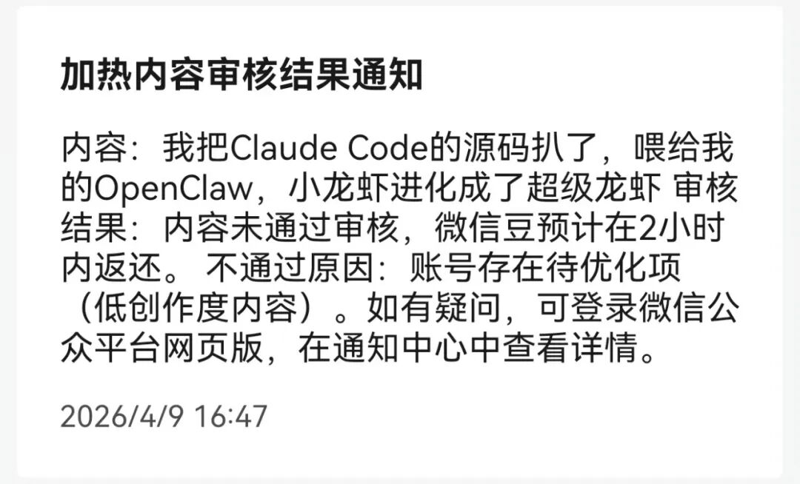
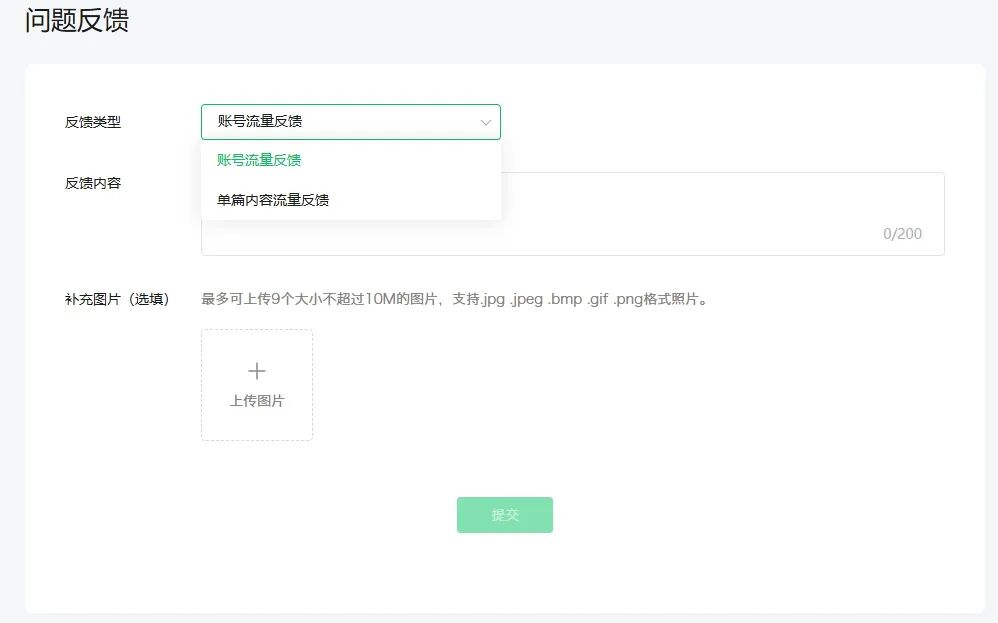

前几天我发现一件奇怪的事。
公众号后台打开，推荐量全是0。
不是下降，是直接归零。没有任何通知，没有违规提醒，没有站内信。文章都还在，能正常打开，就是彻底没有推荐了。
我等了几天，还是0。实在没忍住，去广告与服务里充了50块钱加热，想看看是不是文章本身有问题。
结果通知弹出来：加热账号存在待优化项——低创作度内容。

看到这句话我整个人愣了一下。翻译成人话就是：平台觉得你的文章质量不行。
但我这个号本来就是做AI使用分享的，文章确实用了AI辅助创作，方向和内容都是我自己的，怎么就成了"低创作度"？
不过纠结归纠结，问题得解决。如果你的账户跟我一样，突然没流量了，也跟着一起自查一下吧。
怎么自查
加热失败之后，账号上会出现一个「账号检测」按钮。
点进去就能看到，哪几篇文章被标记为「低创作度内容」。平台会直接列出来，不用你自己猜。
所以如果你最近也发现流量异常——文章正常发但没有推荐，后台也没有任何通知——可以用这个方法查一下：
公众号后台 → 广告与服务 → 付费加热 → 充五十块试一下 → 看有没有"待优化项"提示。
如果提示了，说明你的号已经被标记了。如果可以正常加热，就暂时安全（可退款，懂得都懂）。
怎么恢复
查出来问题后，接下来就是申诉。
去公众号后台，在账号检测后，找到「问题反馈」→「单篇内容流量反馈」，对被标记的每一篇文章单独处理。

我总结了三种处理方式：
第一种，直接删。 如果文章确实AI痕迹很重，改也改不动了，别犹豫，删了。拿删除截图去反馈就行。长痛不如短痛。
第二种，申诉恢复。 文章没问题、觉得被误伤的，准备两张截图——朱雀AI检测结果（证明AI占比低）和易撰原创检测结果（证明原创度高），申请恢复文章流量。
第三种，标注后申诉。 跟我一样是AI分享类账号的，先把文章标注「内容AI生成」，再配上易撰原创检测截图，去申请恢复。
我自己的操作是第三种。反馈提交之后一般很快就有回复，流量大概3天左右恢复。
注意一点：每篇有问题都要单独反馈，用账户流量反馈没有用，亲测。虽然麻烦，但走完这个流程，账号基本能恢复正常。
到这里，如果你只是想解决"号被限流了怎么办"这个问题，上面的步骤照着做就行。
但我查完之后自己想了想，还是得搞清楚平台到底在查什么，不然下次还可能中招。
平台到底在查什么
很多人说微信在"打AI写作"，我觉得这个理解不太准确。
你看，标注了"AI生成"的内容是可以过审核的，我自己的号就是这么恢复流量的。说明平台并不排斥AI创作，它排斥的是那种没有观点的、粗制滥造的、拼搬运洗的"水内容"。
说到底，不管你是AI写的还是手写的，如果你的文章没有自己的思考、没有有价值的信息、读完了跟没读一样——那就是平台要清理的东西。
核心就一句话：平台打的是低质量内容，不是AI工具本身。
平台的新规
近期，微信公众号更新了《微信公众平台运营规范》第3.27条，专门针对"非真人自动化创作行为"，划了三条红线：
① 脱离真人表达，用AI生成、改写、拼接或搬运内容——违规。
② 脚本托管、自动批量发——违规。
③ 教人用AI批量造文的教程——也违规。
处罚从限流删文到封号不等。那个"夫妻用AI写公众号年入200万"的号，这次就被封了。
但微信团队也说了，鼓励用AI辅助创作，反对的是AI替代真人创作。
翻译成大白话就是：AI可以帮你干活，但不能替你思考。
选题是你定的，观点是你的，经历是你的，AI只是帮你把语言组织得更好——这种没问题。
反过来，如果一篇文章从选题到框架到例子到结论全是AI出的，你只是复制粘贴加个标点——这种就是平台要打的。
所以如果你也在用AI辅助写公众号，我有几点建议：
选题自己定，观点必须自己的，AI只帮忙润色和查资料。如果用了AI，标注一下。这不丢人。
本文由AI辅助创作，选题、核心观点和真实经历均为作者本人。